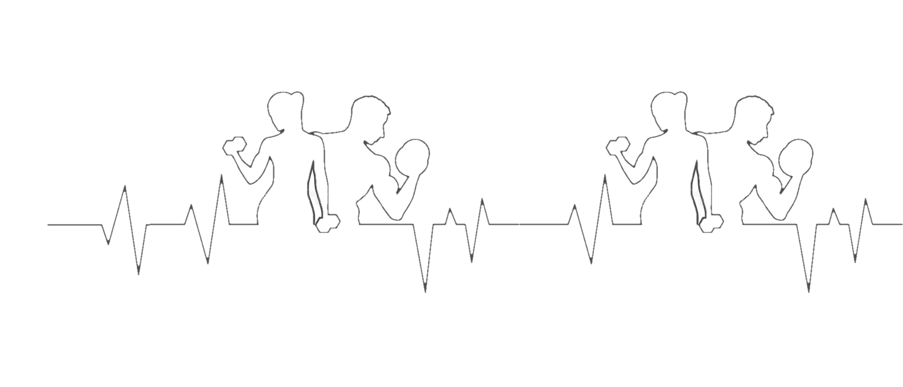
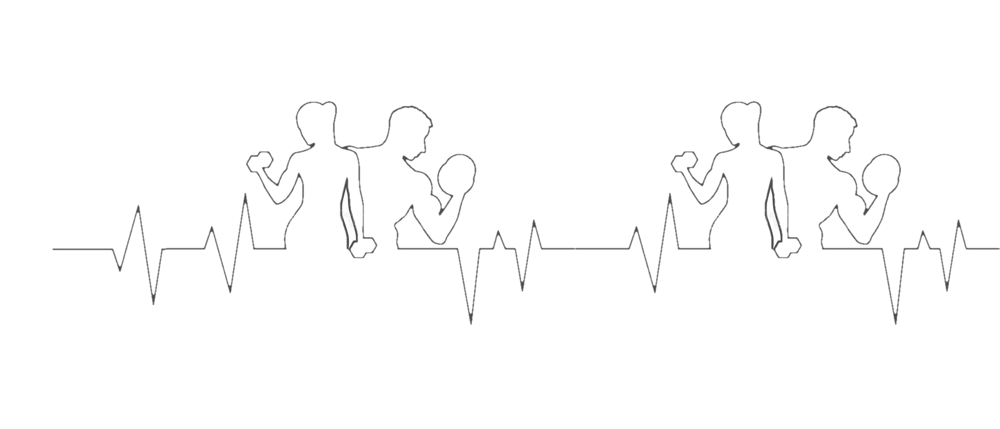
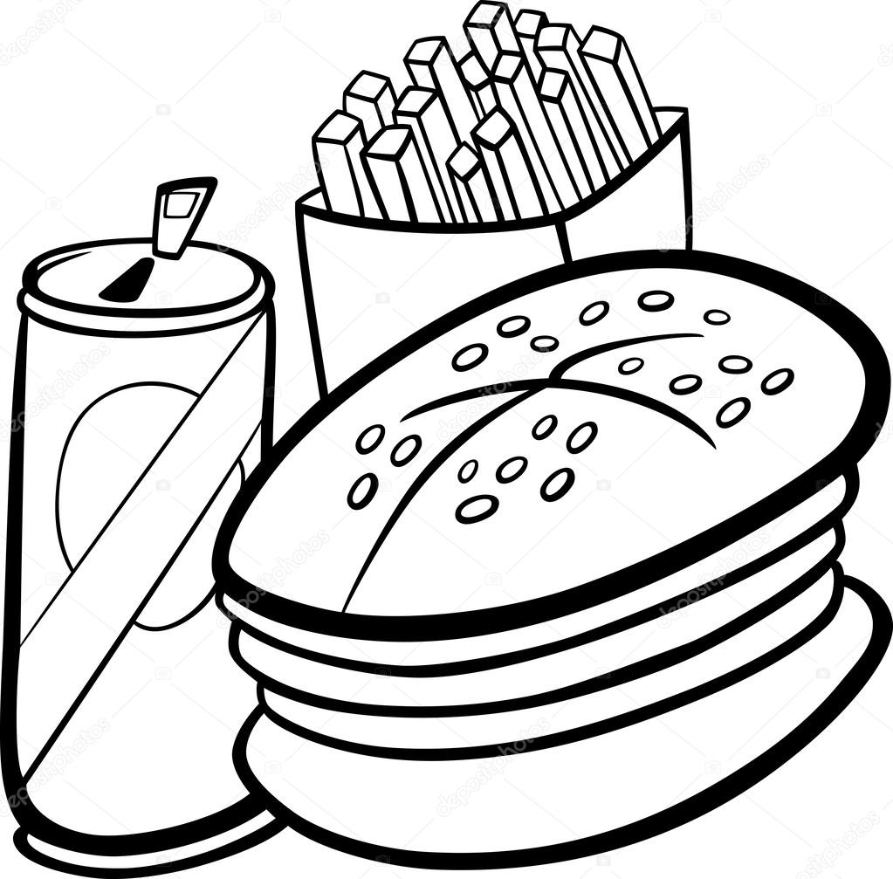
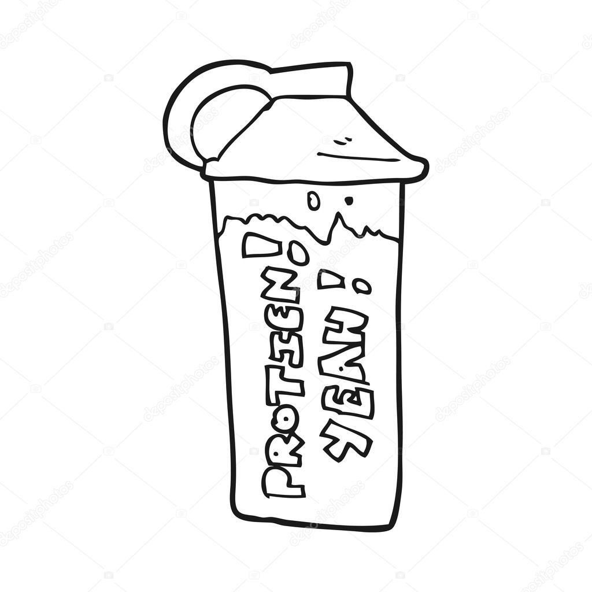
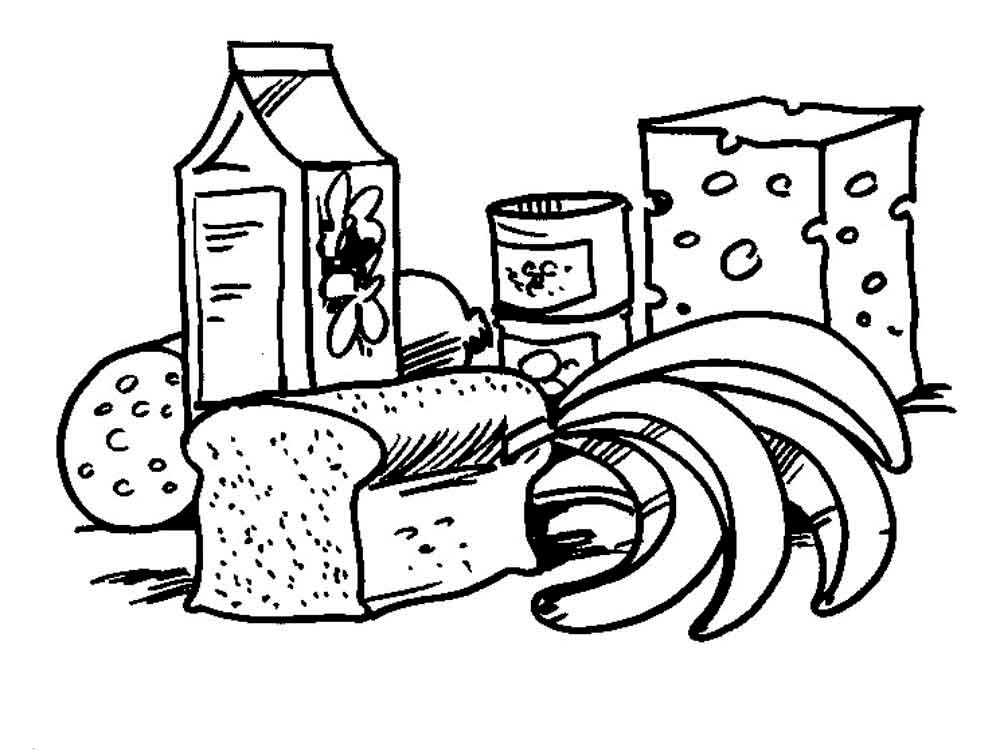
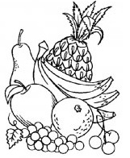
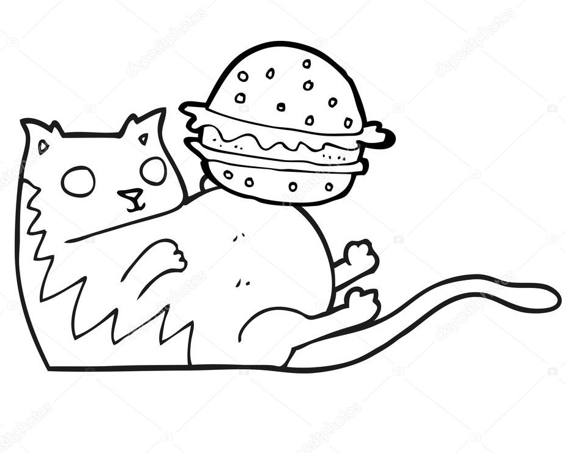

Мифы о тренажерном зале и занятиях спортом
Миф № 1. Если вы съели вредную пищу, её можно сжечь в спортзале
«Химическая» пища разрушительна для организма. Этот вред нельзя просто взять и сжечь с помощью тренировки. В исследовании 2015-го израильский и немецкий учёные установили: регулярное употребление фастфуда и другой обработанной еды повышает риск развития аутоиммунных заболеваний. Физические упражнения вызывают стресс в организме, а при неправильном питании спорт принесёт больше вреда, чем пользы — у организма не будет ресурсов на восстановление после тренировок. Если вы активно занимаетесь спортом, особенно важно исключить вредную пищу из рациона.
Миф № 2. Протеин полезен в любых количествах
 Белок поддерживает и восстанавливает организм. Однако избыток белка — особенно из животных продуктов — приводит к интоксикации организма и может стать причиной ожирения, рака, болезней сердца и остеопороза. Новые исследования показывают: для здорового функционирования организму нужно около половины грамма белка на килограмм веса.
Миф № 3. Еда после тренировки сразу превращается в жир
Нет, съеденные калории не превращаются сразу же в жир на теле. Они отправляются восстанавливать организм после тренировочного стресса. Но это касается только чистой, богатой полезными веществами пищи. Поэтому качество еды после тренировки играет большую роль — от этого зависит зависит поддержка мышечной массы и прогресс в будущих тренировках.
Миф № 4.Фрукты так же вредны, как и конфеты
 $nbsp Основа этого заблуждения — наличие во фруктах сахара; некоторые люди приравнивают его к сахару в сладостях. Это не так: сахара во фруктах — природные, нерафинированные, а плоды богаты минералами и клетчаткой, необходимыми для здоровья человека. Фруктовые сахара имеют низкую концентрацию благодаря органической влаге в плодах. Такой сахар вряд ли приведёт к набору веса или другим неприятностям, в отличие от искусственных подсластителей и магазинных конфет.
Миф № 5.Жир из пищи превращается в жир на теле
 Правильные жиры — качественные растительные масла, орехи, семечки и авокадо — уменьшают чувство голода, надолго насыщают и улучшают состояние кожи лица, ногтей и волос. Растительные жиры богаты антиоксидантами и ускоряют метаболизм. Добавьте половинку авокадо в смузи или ложку ореховой пасты в утреннюю кашу — и вы сразу почувствуете эффект.